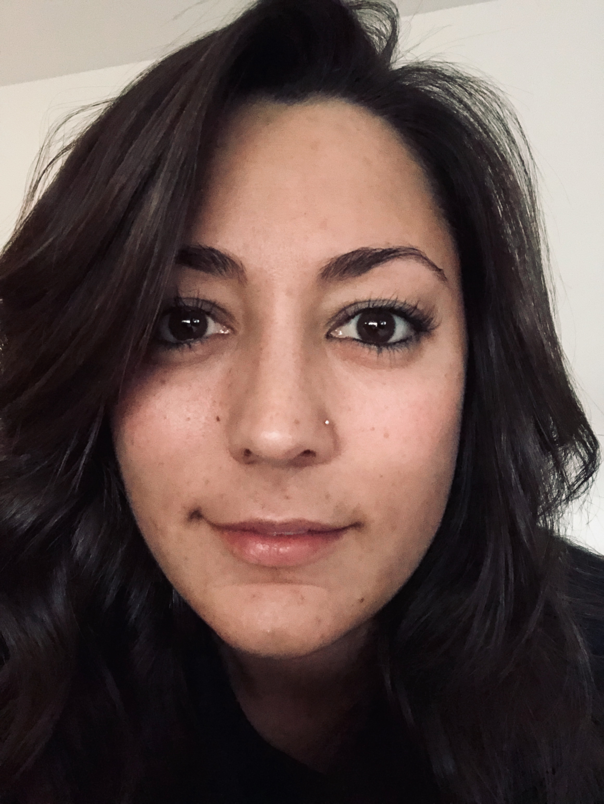

Artist Biography
Video games were once therapy for Kate; when Kate was 13 years old she was diagnosed with Cancer, this diagnosis kept her mostly confined to her home or bedroom. At first video games were a welcomed distraction or escape from her reality but over time Kate realized that even though she was stuck in bed, unable to interact with the outside world, she could have hundreds of interactions with none-player characters (NPC), and even real people, live multiple different lives, and go on endless adventures around the world or even to new fantasy worlds, all through video games.
Kate is drawn to video games for many reason but the foremost is their ability to immerse the player in vast, ever changing, imaginative universes that draw you in with beautiful artwork, interactivity, and the ability to control the world in ways that most people don’t get to experience in real life. The talent that video game designers/illustrators have to create stunning backgrounds, 3 dimensional objects and even whole interactive worlds by creating digital illustrations and 3 dimensional renderings drove Kate to make a drastic career shift from Nursing to Video Game Designer/Developer in 2018 and she has been pursuing that dream ever since.
Artist Statement
I am a firm believer in the idea that a person’s passion or in some cases passion’s, the things that excite you, the things that you are curious about, the things that you choose to make time in your busy schedule to do on a regular bases, are some of the most important things to pursue in life. The pursuit of a passion sparks creativity and boosts your creative process, you are more inclined to come up with creative ideas when you like what you are doing and what you are creating for. This idea is what drove me to change my degree path and my entire career objective from Nursing to Video Game Design. I spent many years in the Registered Nursing degree program at The University of Northern Colorado (UNC), in pursuit of a Bachelor’s degree in Nursing, if you were to ask me today why I was in that program I wouldn’t be able to give you a reason other than the fact that I thought it was a good career to have. I didn’t enjoy the courses or the work, I struggled to pay attention and to even want to learn the profession. In 2017 my husband and I were stationed overseas in Germany, I wasn’t able to continue my Nursing degree online or overseas so I was a little lost as to what to do now. My husband asked me one day what I enjoyed doing, what was I passionate about? Immediately I knew that I wanted to find a career in developing video games, and after a little research I found a plethora of different fields within the video game world that I would enjoy being a part of. I am still not settled on exactly what part of the video game development process I want to be a part of but I know that I want to be able to design and create worlds that challenge players both physically with hand eye coordination and mentally with puzzles and emotional obstacles that they have to help their character through.
Although my work is mostly comprised of projects using the same digital mediums, Adobe Illustrator, Adobe Photoshop, Adobe After Effects, and Blender, I try to make sure that each piece is unique and serves its purpose. One of my main joys in creating digital illustrations and artwork is that, for the most part, it all has a purpose, and intent behind it, whether that’s to provide information to the viewer, or entertainment, or if it’s just as a design piece for a company’s letterhead or website or product. I enjoy creating things that make people think, that establishes a sense of imagination and wonderment in the viewer or player. And most of the work on my digital portfolio plays its on role and purpose which is to develop my skills in the art of creating digital background scenes and 3 dimensional objects and characters with the intent of honing my abilities as a future video game designer and developer.